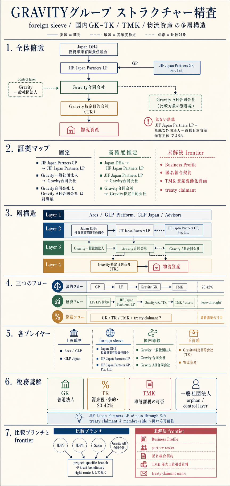
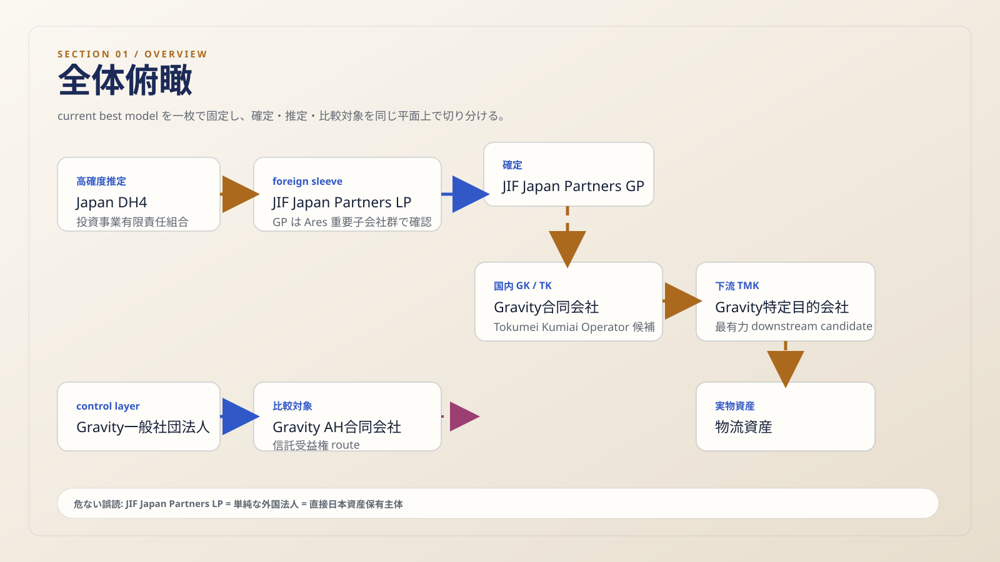
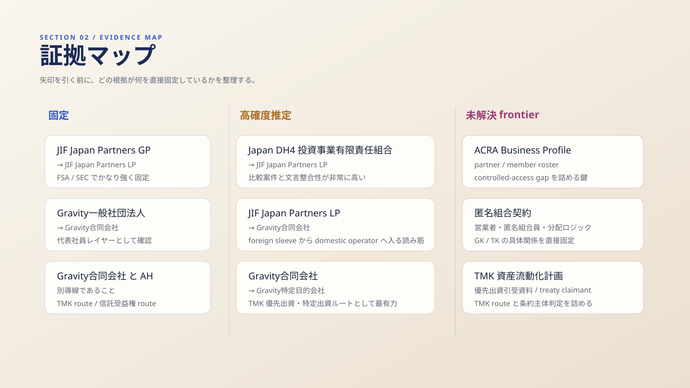
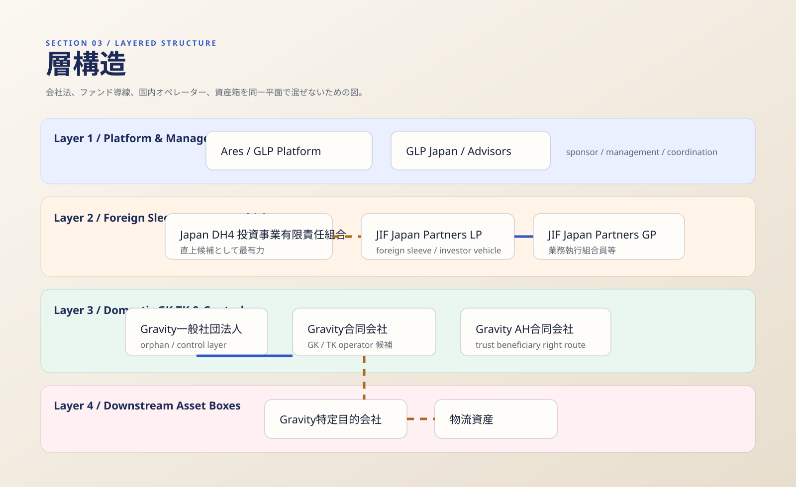
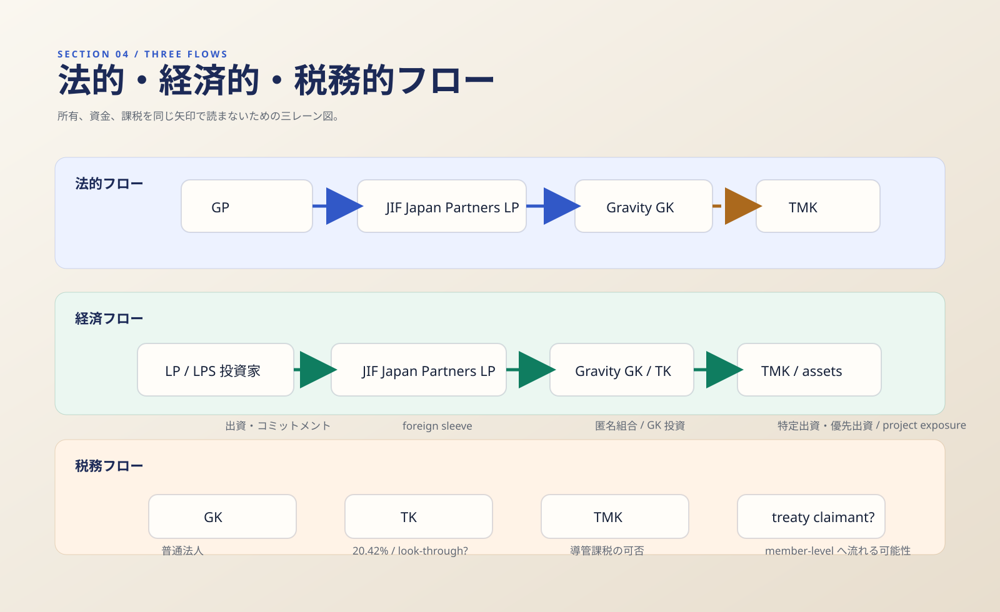
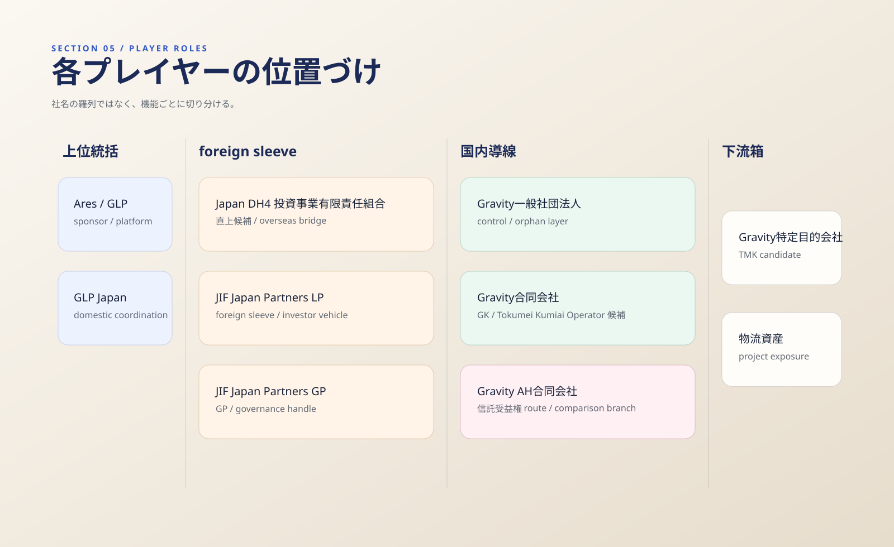
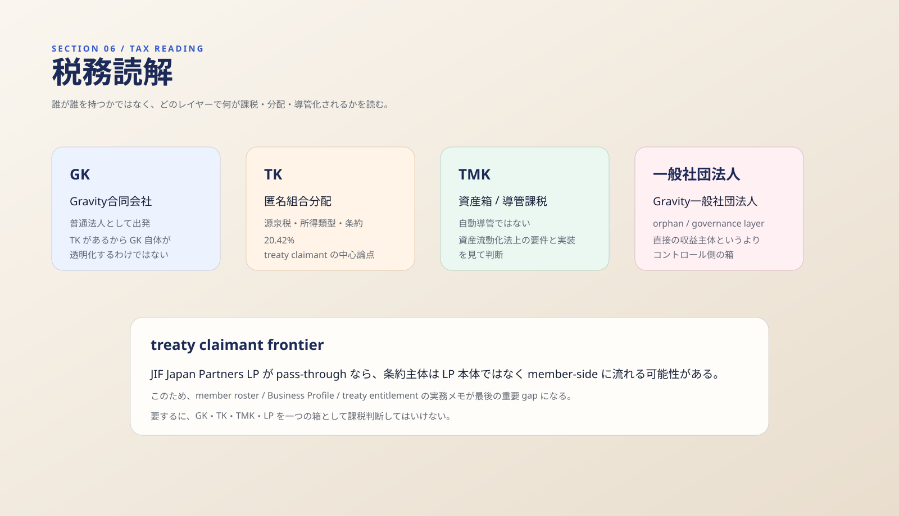
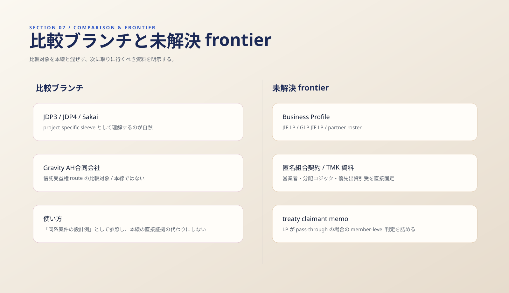

{kind=link}
{kind=link}
AI生成 7セクション統合ポスター
画像生成モデルで、日本語主体の誌面型インフォグラフィックとしてまとめ直した版です。 先に全体を一枚でつかみたいときは、まずこのポスターを見るのが最短です。

- 役割
- 既存の deep research と HTML 論点を、図像優先で再圧縮した master visual です。
- 見方
- 上から順に、全体俯瞰、証拠マップ、層構造、三つのフロー、各プレイヤー、税務読解、比較と frontier を追います。
- 位置づけ
- このポスターを入口にしつつ、その下の SVG セクション図版で各論点を深掘る二段構えです。
公開一次ソース: FSA tokurei 011、FSA tokurei 012、FSA 特定目的会社届出一覧
全体俯瞰
まず見るべきなのは、これが会社グループ図ではなく、投資導線・法的導線・税務導線の合成図だという点です。 その前提を一枚に圧縮したのがこの図です。

- この図が示すもの
- 上流
LPS / foreign sleeveから国内GK/TK、下流TMKまでの current best model を一枚で固定しています。
- 固定
JIF Japan Partners GP → JIF Japan Partners LP、Gravity一般社団法人 → Gravity合同会社、そしてGravity合同会社とGravity AH合同会社が別導線である点です。
- 危ない誤読
JIF Japan Partners LPを単純な外国法人として読み、いきなり日本資産の直接保有主体だと決め打ちする読み方です。
公開一次ソース: FSA tokurei 011、FSA tokurei 012、FSA 特定目的会社届出一覧
証拠マップ
この案件は、線の強さを混ぜると結論が壊れます。どの矢印が公的開示で固定され、どこから先が高確度推定なのかを先に分けておく必要があります。

- 確定の意味
FSA 011 / 012 / 013 / 014やSEC Exhibit 21.1のように、公的ソースが直接つないでいるものです。
- 高確度推定
Japan DH4 → JIF LP、JIF LP → Gravity GK、Gravity GK → Gravity TMKは、複数の周辺ソースが整合するが、まだ direct proof までは届いていない線です。
- 次に必要なもの
Business Profile、匿名組合契約、TMKの資産流動化計画、そして条約主体判定に使う member / partner 情報です。
公開一次ソース: FSA QII 01_b、Ares Exhibit 21.1、ACRA Buying a Business Profile
層構造
会社法、ファンド実務、物件保有、税務の各レイヤーを混ぜると、この案件は見えなくなります。 そこで、構造をあえて四層に切り分けています。

- 上流層
Ares / GLP PlatformとGLP Japanは、経済的持分の全部を持つというより、スポンサー・運用プラットフォーム層です。
- foreign sleeve 層
Japan DH4 投資事業有限責任組合とJIF Japan Partners LPは、日本案件へ接続する上流の foreign sleeve / investor vehicle として読むのが自然です。
- 国内導線
Gravity一般社団法人、Gravity合同会社、Gravity特定目的会社の並びで、日本側のコントロール・匿名組合・資産箱が現れます。
公開一次ソース: Ares Exhibit 21.1、GLP JIF launch article、FSA tokurei 012
法的・経済的・税務的フロー
この案件の急所は、所有・資金・課税の線が一致しないことです。 そのズレを一目で読めるように、三つのフローを並列にしています。

- 法的フロー
GPがLPを動かし、国内ではGKがTKの営業者として機能し、その下流にTMKが置かれる読み筋です。
- 経済フロー
- 資金は上流投資家から入り、
GK/TK、TMK、物流資産へと向かいます。ここで「法的な所有」と「経済的なエクスポージャー」は一致しません。
- 税務フロー
GK、TK、TMK、条約主体の判定はそれぞれ別論点です。20.42%や treaty claimant の議論はこの lane で読むべきです。
公開一次ソース: FSA tokurei 012、NTA 2878、NTA 2884
各プレイヤーの位置づけ
このグループを理解するには、社名ではなく機能で切るのが有効です。誰が「上位統括」なのか、誰が「導線」なのか、誰が「箱」なのかを揃えます。

- 運用・統括
Ares / GLP PlatformとGLP Japanは、上位で sponsor / management / coordination を担うプレイヤーです。
- foreign sleeve
JIF Japan Partners LPは、外国側の資金導線・投資ビークルとして置くと最も整合します。
- 国内箱
Gravity合同会社は国内GK/TK operator候補、Gravity特定目的会社は下流の資産箱候補、Gravity AH合同会社は信託受益権ルートの比較対象です。
公開一次ソース: Ares Exhibit 21.1、GLP JIF launch article、data.gov.sg ACRA dataset
税務読解
実務で本当に大事なのは、持株比率ではなく、どのレイヤーで何が課税・分配・導管化されるかです。
この図では、論点を GK / TK / TMK / 一般社団法人 / treaty claimant に分解しています。

- GK
Gravity合同会社の出発点は普通法人です。匿名組合があるからといって、合同会社自体が透明化するわけではありません。
- TK
- 匿名組合分配は、源泉税・所得類型・条約適用主体を考えるときの中心です。ここで
20.42%や条約恩典の読み筋が問題になります。
- TMK
TMKは自動的に導管ではありません。資産流動化法上の要件や分配・特定出資・優先出資の実装を見て判断する必要があります。
さらに、JIF Japan Partners LP が pass-through と扱われるなら、条約主体が LP 本体ではなく member-side に流れる可能性があります。
ここが treaty claimant frontier の核心です。
公開一次ソース: e-Gov 会社法、e-Gov 商法（匿名組合関連）、e-Gov 資産流動化法、NTA 一般社団法人等の法人税取扱い
比較ブランチと未解決 frontier
比較ブランチを本線と混ぜないこと、そして未解決 frontier を論点として明示することが、この案件では特に重要です。

- 比較ブランチ
JDP3 / JDP4 / Sakaiは、同系の project-specific sleeve として理解する方が正確です。本線の直接下流候補と即断するのは危険です。
- 別導線
Gravity AH合同会社は信託受益権 routeであり、Gravity合同会社のTMK routeと混同してはいけません。
- frontier
Business Profile、匿名組合契約、資産流動化計画、優先出資引受資料が入れば、推定線のかなりの部分が実線へ寄ります。
公開一次ソース: FSA 特定目的会社届出一覧、ACRA Buying a Business Profile、NTA 2888
根拠と公開成果物
この納品は chat-only の即席メモではなく、既存の研究成果物を図版主導へ再編集したものです。 公開ページからそのまま辿れる成果物と、本文の根拠になっている公開一次ソースをここに残します。
結論を短く言い切ると、本件は「foreign sleeve と国内 GK/TK と下流 TMK が噛んだ多層構造」であり、
current best model は Japan DH4 投資事業有限責任組合 → JIF Japan Partners LP → Gravity合同会社 → Gravity特定目的会社 です。
ただし後半二本の矢印はまだ高確度推定であり、今後の primary gap を埋めることで実線化できる可能性があります。